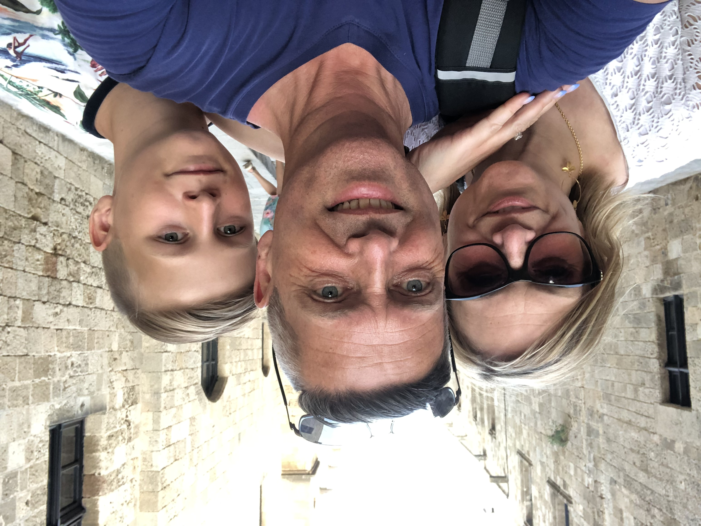
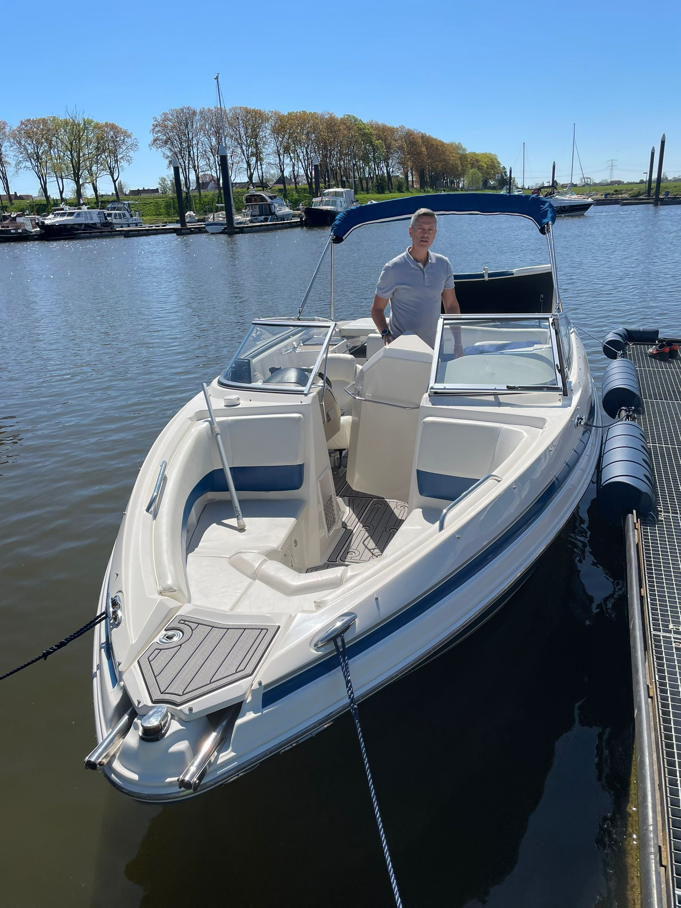

Bor de Wolff: de introductie!
Allereerst: van harte welkom op mijn pagina! Mijn naam is Berend-Jan de Wolff, maar iedereen kent mij beter bij mijn roepnaam: Bor. Gezien mijn familienaam hoef ik denk ik niet uit te leggen waarom...... Ik ben geboren op 8 mei 1966 in Zaandam, Nederland. Na vele omzwervingen, meestal door mijn werk en de bijbehorende buitenland-plaatsingen, ben ik uiteiendelijk in België terechtgekomen. Daar ben ik gelukkig getrouwd met Machteld. We hebben samen een zoon Tristan. Op de onderstaande afbeeldingen kun je zien wat zoal onze hobbies zijn. Op de volgende pagina's kun je uitgebreidere informatie terug vinden. Mocht je toch nog meer willen weten neem dan even contact op! Veel lees-plezier.



